Entwurf eines Bodeneffektfahrzeugs der Klasse A als Tandem-Horizontaldreidecker – von der CAD-Auslegung bis zur Fertigung der tragenden Faserverbund-Bauteile.
Tandem-Ekranoplan Klasse A
Konzept und CAD-Auslegung
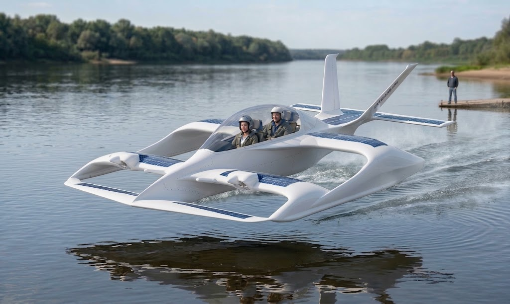
Klasse A Tandem-Horizontaldreidecker
Klappbare Motorpylone

Detail der klappbaren Motorpylone im CAD-Modell
Erprobung 2022
Erprobung 2022
Luftstrom-Test
Umsetzung: Faserverbund-Leichtbau
Entwicklung, Formenbau und Fertigung der hochfesten CFK-Leichtbaukomponenten des Tandem-Ekranoplans (kohlenstofffaserverstärkter Kunststoff) mittels Prototypen- und Schlauchblasverfahren.
Vierkanalige Motorsteuerkonsole
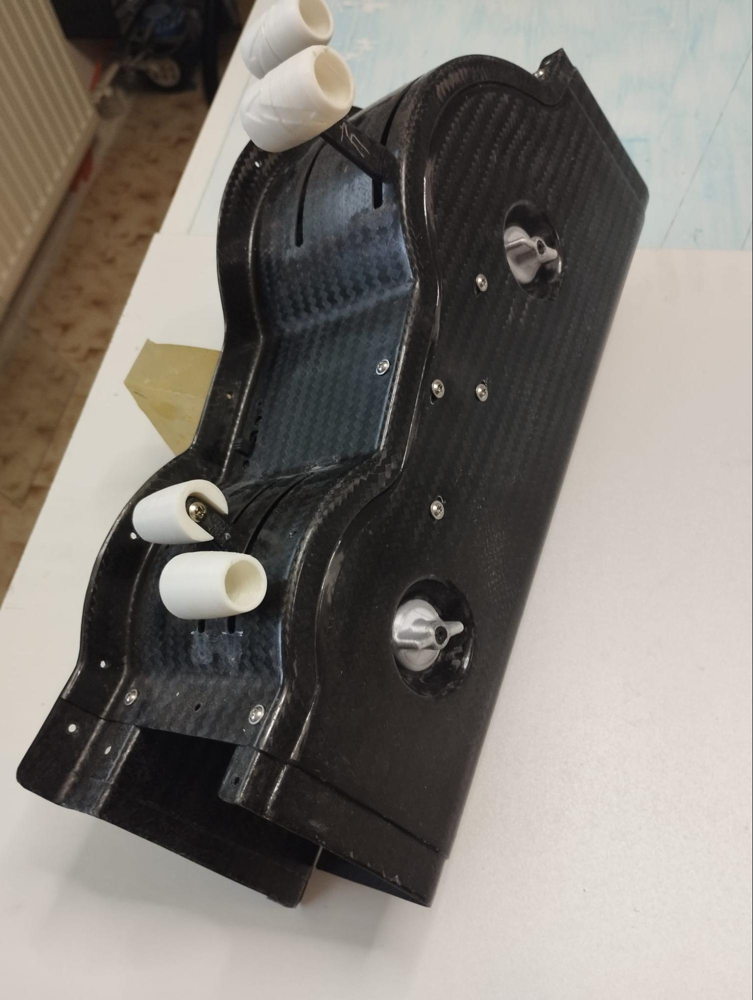
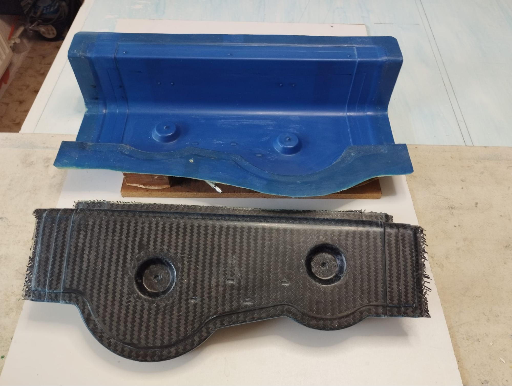
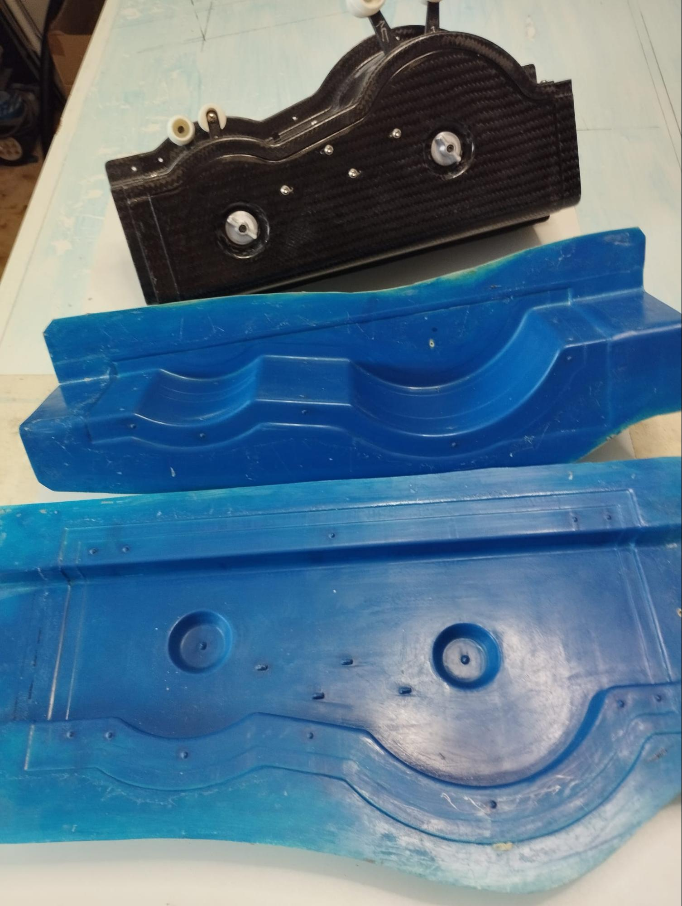
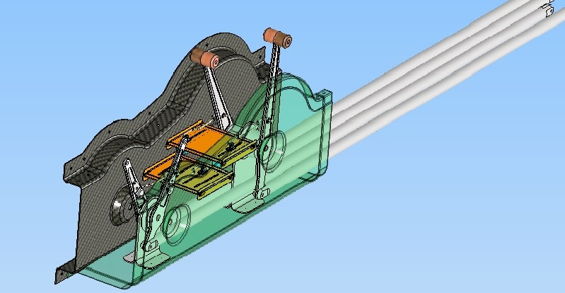
Jeder der vier Kanäle dient zur Steuerung eines oder mehrerer Elektromotoren. Jeder der vier im unteren Bereich der Konsole angeordneten Bedienhebel ist mit einer Anschlussöse zur Aufnahme eines Verbindungsgestänges versehen. Dadurch kann bei einer Tandemanordnung der Cockpits eine mechanische Verbindung mit einer zweiten Motorsteuerkonsole hergestellt werden. Auf diese Weise lassen sich die Stellbewegungen der beiden Konsolen synchron übertragen.
Das Gehäuse der Konsole besteht aus einem kohlenstofffaserverstärkten Sandwich-Verbundwerkstoff (CFK-Sandwich): zwei Lagen Kohlenstofffasergewebe mit einem Flächengewicht von 160 g/m² und einem dazwischenliegenden 1 mm dicken Sandwich-Kern aus Airex® T90.60. Diese Bauweise ermöglicht eine hohe Steifigkeit und Festigkeit bei gleichzeitig geringem Gewicht.
Die beiden blauen Negativformen (Matrizen) dienen zur Herstellung der CFK-Gehäuseteile im Vakuumformverfahren. Sie wurden anhand von Meistermodellen gefertigt, die auf Grundlage der ursprünglichen CAD-Modelle im 3D-Druckverfahren hergestellt wurden. Als formgebende Fertigungswerkzeuge gewährleisten sie eine präzise Reproduktion der vorgegebenen Geometrie sowie die erforderliche Oberflächenqualität der fertigen Bauteile.
Steuerhebel – Fertigungsschritte
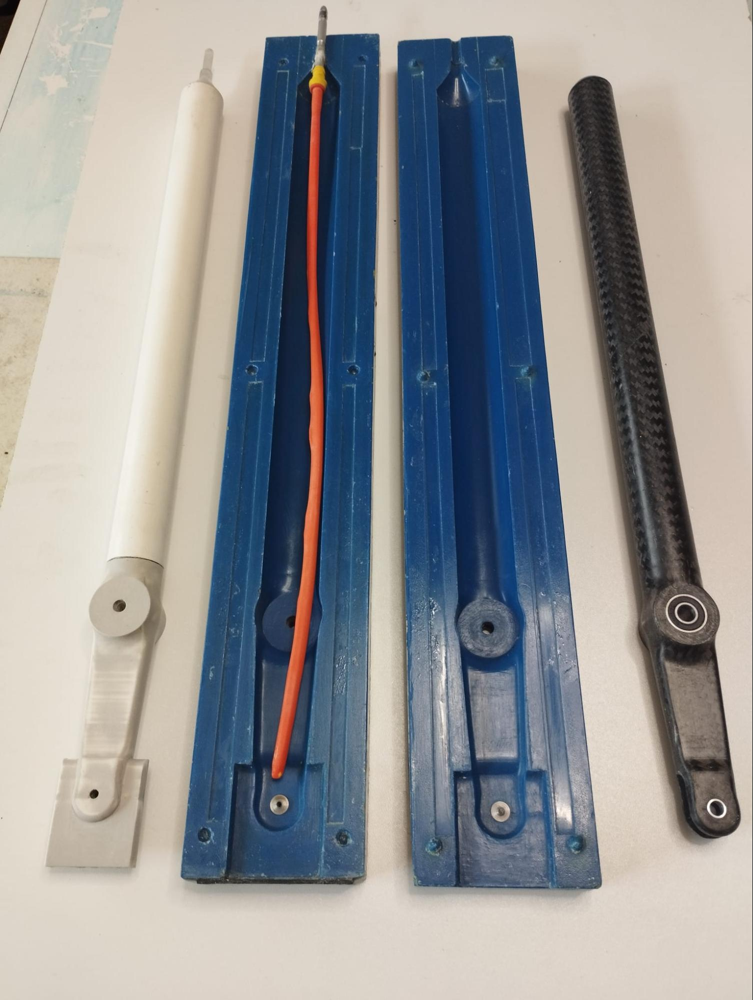
Von links nach rechts dargestellt:
- Optimiertes Modell des Steuerhebels (erste, vereinfachte Version zur Erprobung des Fertigungsverfahrens).
- Geteiltes Formwerkzeug aus Polymerbeton, gefertigt nach einem Urmodell, das auf Basis des ursprünglichen CAD-Modells im 3D-Druck hergestellt wurde.
- Vorform des Steuerhebels aus Kohlefaserverbund (CFK), hergestellt unter Verwendung eines elastischen Ballons, der mit Druckluft aufgeblasen wird und das Laminat an die Formkontur anpresst.
- Fertiger Steuerhebel aus CFK nach der Endbearbeitung (Entfernung des Grates und lokale Oberflächenbearbeitung).
Konstruktiv-technologische Besonderheiten: Die Lagersitze für die Wälzlager werden durch zylindrische, spanend gefertigte Einlagen in der Formhöhlung ausgebildet. Die Durchgangsbohrung für die Befestigungsschraube entsteht durch spitz zulaufende Stifte, die vor dem Einlegen des Laminats in das Formwerkzeug eingebracht werden und eine präzise Positionierung sowie Geometrie der Bohrung gewährleisten.
Steuerknüppel
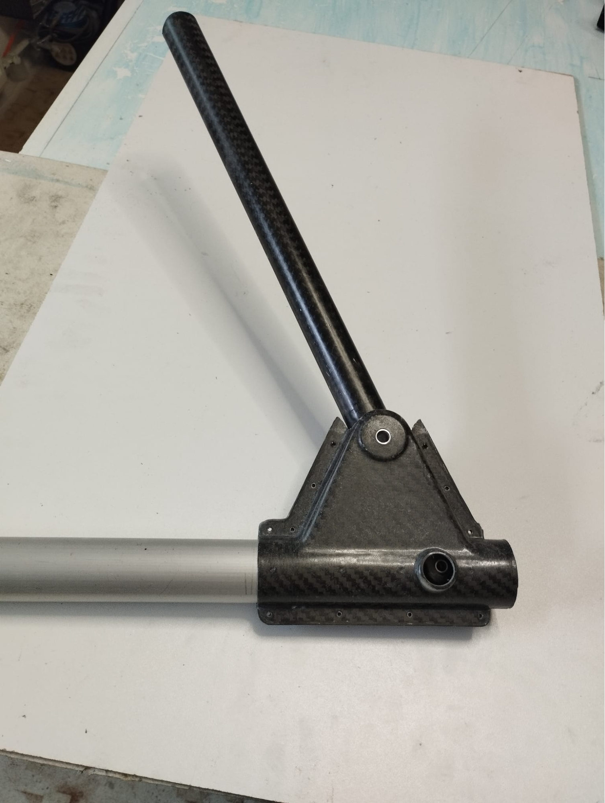
Der Steuerknüppel dient zur Übertragung der Steuerkräfte auf das Höhen- und Querruder-Steuersystem. Die Baugruppe besteht aus einer Längssteuerwelle, einem starr mit der Steuerwelle verbundenen Lagerbock der Steuerknüppelachse sowie einem darin um die Schwenkachse drehbar gelagerten Steuerknüppelhebel.
Die Montagebohrungen im Steuerknüppelhebel dienen zur Befestigung der Steuerstangen sowie zur Sicherung und visuellen Kontrolle der Verbindung.
Zweiarmiger Umlenkhebel – Fertigungsschritte
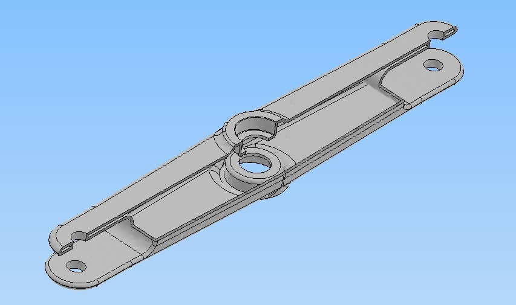
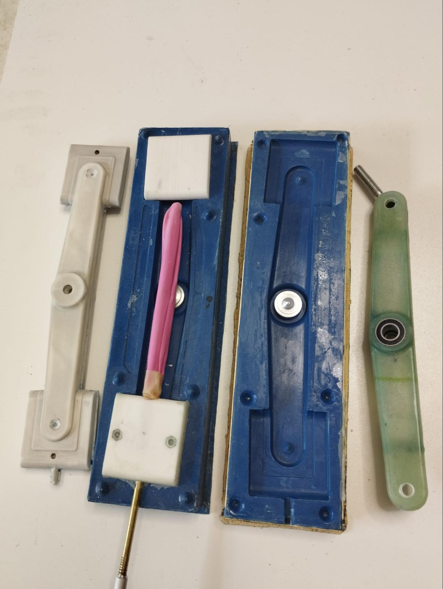
Von links nach rechts dargestellt:
- Optimiertes Modell des zweiarmigen Umlenkhebels – die erste, vereinfachte Version zur Erprobung und Optimierung des Fertigungsverfahrens. Im Querschnitt weist das Bauteil ein rechteckiges Profil auf.
- Zusammengesetzte Pressform aus Polymerbeton, hergestellt anhand eines Urmodells aus dem 3D-Druckverfahren.
- Rohling des Umlenkhebels aus glasfaserverstärktem Kunststoff, geformt mithilfe einer elastischen Druckluftblase, die das Laminat an die Oberfläche des Formhohlraums anpresst.
- Fertiger Umlenkhebel nach der Endbearbeitung, einschließlich Entfernung des Grats und lokaler Nachbearbeitung der Oberfläche.
Die Lagersitze werden durch gedrehte zylindrische Einsätze im Formhohlraum hergestellt. Bei Bedarf können Lager mit ähnlichen Abmessungen verwendet werden – die Geometrie der Lagersitze wird dann durch Austausch der zylindrischen Einsätze angepasst. Die Durchgangsbohrung für den Befestigungsbolzen wird mithilfe zugespitzter Stifte hergestellt, die vor dem Einlegen des Laminats in die Pressform eingesetzt werden.
Verstellbare Propellernabe mit Bodenverstellung
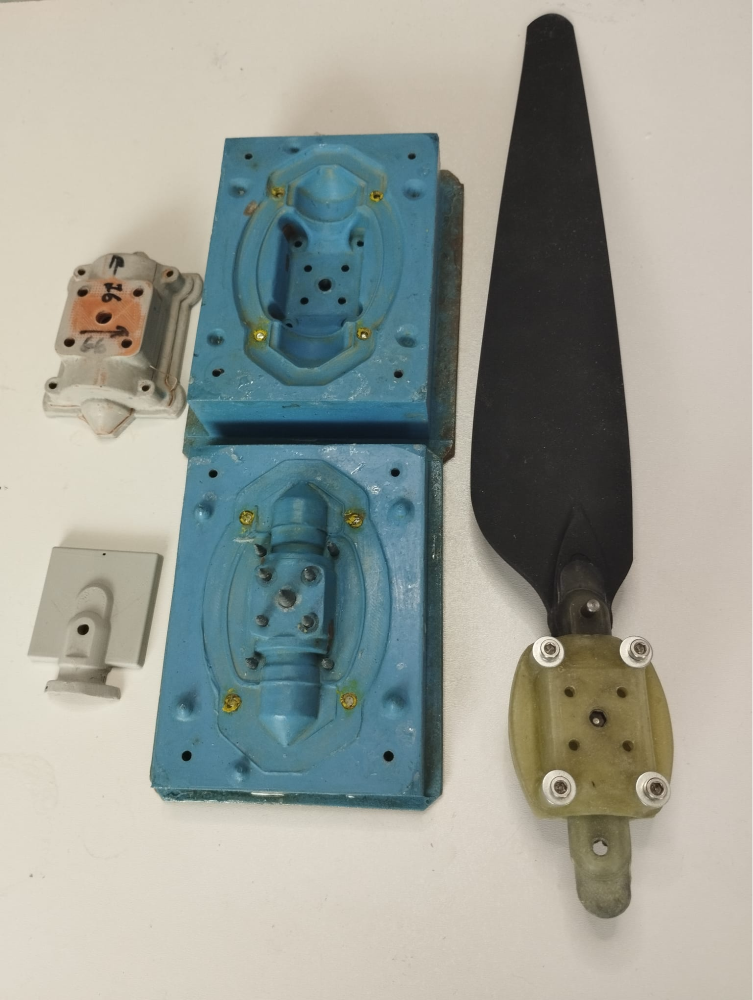
Prototyp einer Propellernabe mit Bodenverstellung (Ground Adjustable Propeller Hub) aus glasfaserverstärktem Kunststoff (GFK), die zugehörige zweiteilige Form sowie das mittels 3D-Druck hergestellte Urmodell. Die Nabe wurde in Autodesk Inventor konstruiert und für den Einsatz mit dem HobbyWing X6 Plus-Antrieb ausgelegt.
Die Form ist so ausgelegt, dass ein nahezu einbaufertiges Bauteil entsteht. Nach dem Entformen ist lediglich das Entfernen des Formgrats erforderlich; eine weitere mechanische Nachbearbeitung entfällt weitgehend. Sämtliche Befestigungsbohrungen werden während des Formprozesses mithilfe von in die Form integrierten Metallstiften erzeugt.
Die Blattverstellung erfolgt über eine zentrale Einstellschraube nach dem Lösen der vier Klemmschrauben. Die integrierte Synchronmechanik gewährleistet eine gleichmäßige Verstellung beider Propellerblätter um denselben Winkel, sodass keine zusätzliche Einstellung oder Kontrolle der einzelnen Blattwinkel erforderlich ist.
Verstellpropeller (Variable Pitch Propeller, VPP)
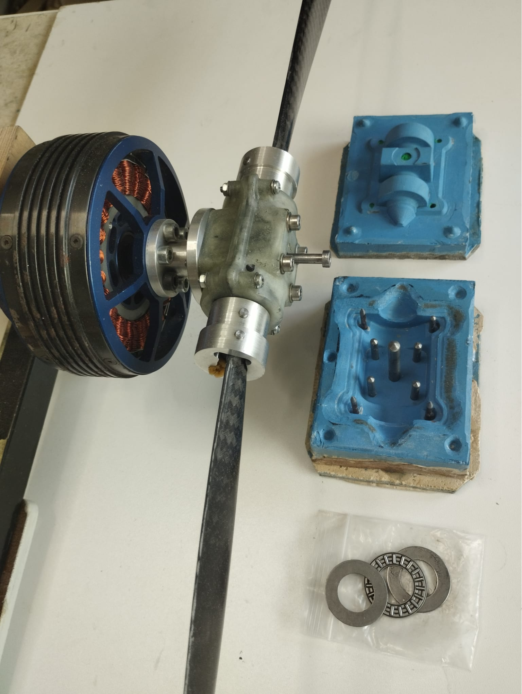
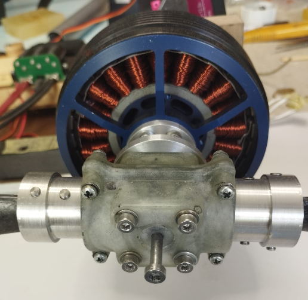
Die Verstellung des Propellerblattwinkels erfolgt direkt aus dem Cockpit über einen Verstellhebel. Die Kraftübertragung auf den Verstellmechanismus kann entweder elektrisch mittels eines Servoantriebs oder mechanisch über Gestänge bzw. Seilzüge erfolgen.
Die Propellernabe wird im Pressformverfahren aus Glasgewebe, Glasrovings und Epoxidharz hergestellt. Nach dem Formprozess ist lediglich das Entfernen des Formgrates erforderlich. Die Befestigungsbohrungen werden bereits während des Formvorgangs mithilfe metallischer Formstifte erzeugt, sodass keine nachträgliche mechanische Bearbeitung nötig ist. Die Pressform besteht aus Polymerbeton und wurde anhand eines im CAD entwickelten sowie im 3D-Druck gefertigten Urmodells hergestellt.
Die Blattzapfen sowie der Motoradapter sind aus hochfestem Aluminium EN AW-7075 gefertigt. Die Propellernabe wurde speziell für den Elektromotor Hobbywing X9 Plus konstruiert und ermöglicht den Betrieb eines Verstellpropellers mit manueller oder automatischer Blattwinkelverstellung.
Umlenkhebel an der Steuerwelle
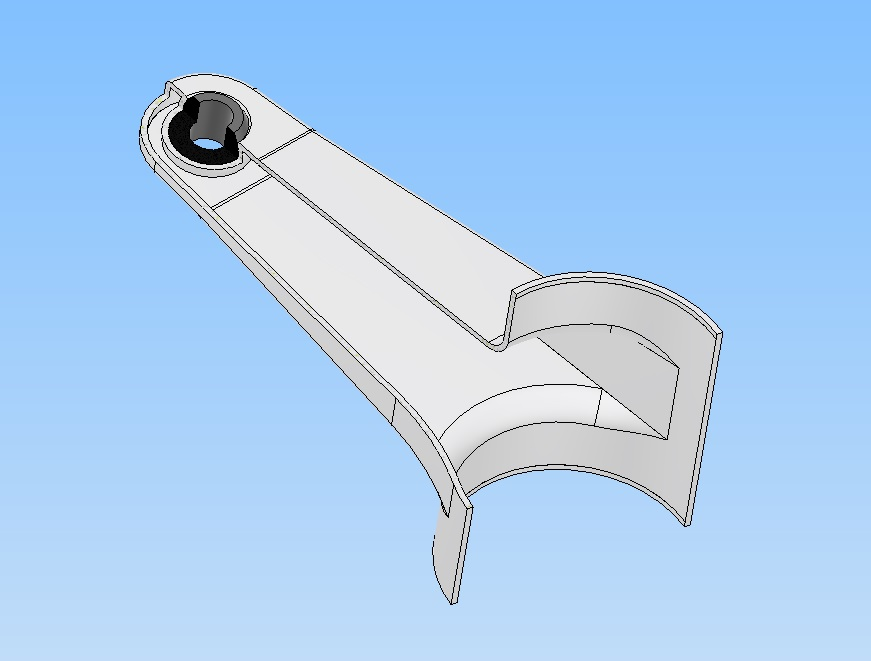
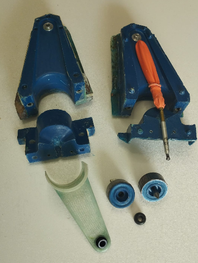
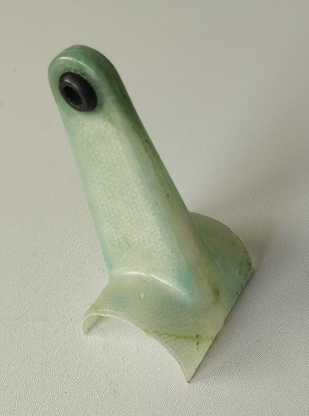
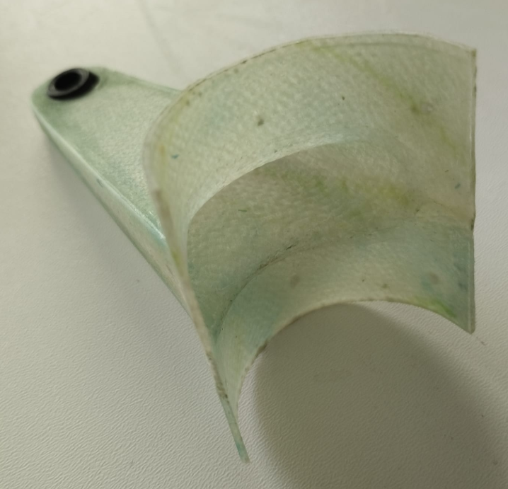
An der Steuerwelle des Flugzeugs sind zwei Umlenkhebel befestigt, an die die Querruder-Steuerstangen angeschlossen werden. Jeder Umlenkhebel besteht aus einem Gehäuse und einer sphärischen, selbstausrichtenden Buchse – dem Innenring des Gelenks. Die Baugruppe ist als nicht demontierbare Einheit ausgeführt; muss die Buchse ausgetauscht werden, ist die komplette Baugruppe zu ersetzen.
Zunächst wird der innere sphärische Lagerring – der sogenannte „Kugelring" – gefertigt. Beim Laminieren des Verbundwerkstoffs wird der Kugelring mit seiner Bohrung auf einen in einer Formhälfte angeordneten Passstift aufgesetzt. Nach dem Aushärten bildet die sphärische Oberfläche des Umlenkhebelgehäuses den Außenring des Gelenks.
Diese konstruktive Lösung ermöglicht den Verzicht auf eine separate Außenbuchse, vereinfacht die Herstellung und reduziert sowohl das Gewicht als auch die Herstellungskosten des Bauteils.
Elektromechanische Mischvorrichtung für die Flaperons
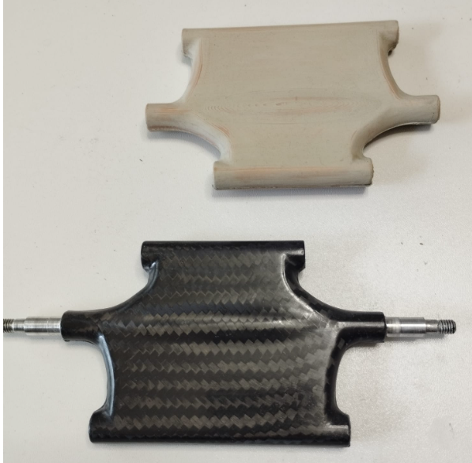
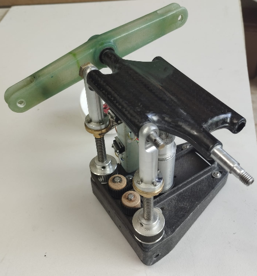
Bei der dargestellten Konstruktion handelt es sich um eine kinematische elektromechanische Mischvorrichtung zur Überlagerung der Steuerbefehle für Flaperons. Der Mechanismus ermöglicht die Summierung unabhängiger Steuerkommandos für die Querruder- und Klappenfunktion und überträgt anschließend die resultierende Bewegung auf das Stellglied.
Die konstruktive Ausführung umfasst elektromechanische Antriebe, Gewindetriebe, Führungseinheiten sowie ein System aus Hebeln und Zugstangen. Diese Elemente gewährleisten die vorgegebene Übertragungscharakteristik bei der Umsetzung der Eingangssignale in den Ausschlagwinkel der Flaperons.
Dreiblättriger Faltpropeller
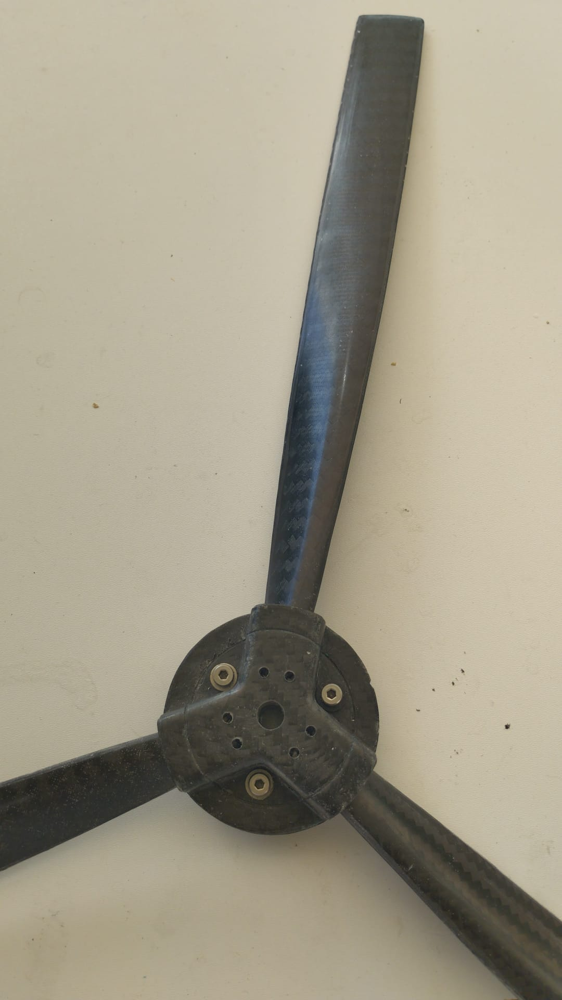
Der dreiblättrige Faltpropeller ist als Baugruppe ausgeführt und besteht aus einer Nabe aus kohlenstofffaserverstärktem Kunststoff (CFK), drei Propellerblättern und einem Satz Befestigungselemente. Die Nabe bildet das zentrale tragende Bauteil: Sie verbindet den Propeller mit der Welle des Antriebssystems und nimmt die klappbaren Propellerblätter gelenkig auf.
Die Nabe wird aus CFK im Formpressverfahren unter Verwendung einer Pressform hergestellt. Die Propellerblätter bestehen ebenfalls aus einem kohlenstofffaserverstärkten Verbundwerkstoff. Die Masse eines Propellerblatts beträgt 22 g, der Nenndurchmesser des Propellers 600 mm. Bei einer Verringerung der Drehzahl oder beim Stillstand des Antriebssystems klappen die Propellerblätter entlang der Drehachse zusammen.
Der Propeller kann für Rechts- oder Linkslauf hergestellt werden. Abhängig von der Einbaurichtung relativ zum Antriebssystem wird das Erzeugnis als Zug- oder Druckpropeller eingesetzt. Die Auswahl richtet sich nach der Drehrichtung der Antriebswelle, der Einbauanordnung des Motors und der erforderlichen Richtung des erzeugten Schubs.